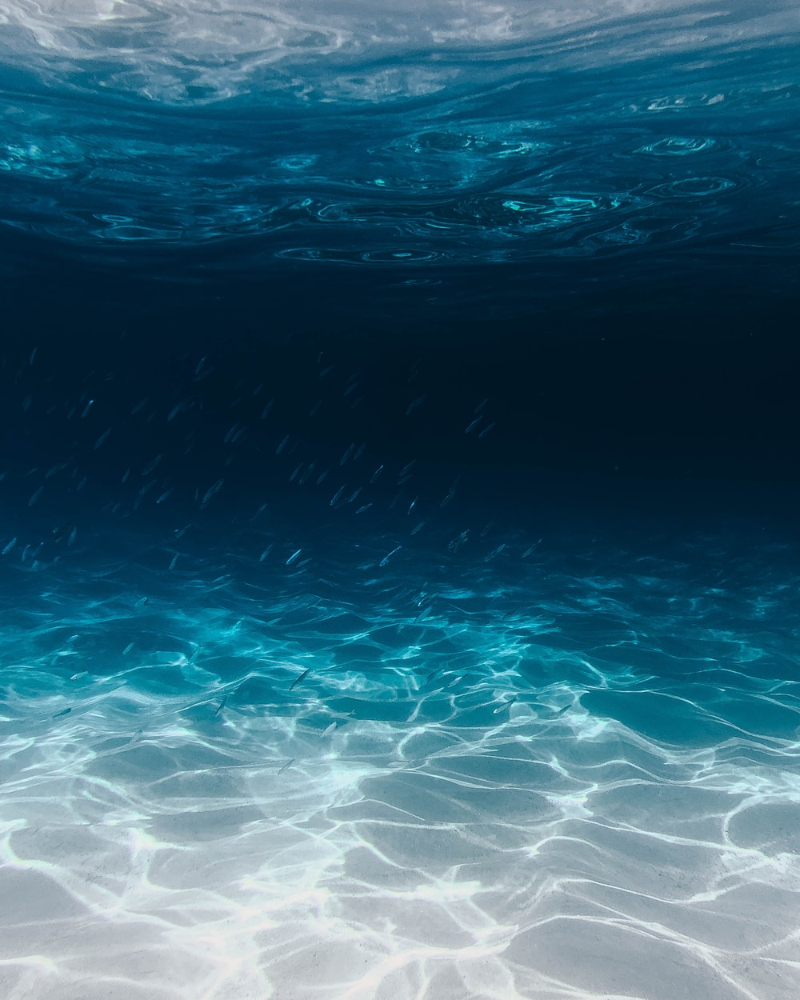

Oarfish are large, greatly elongated fish that can be found in all temperate to tropical oceans,
although they are rarely ever seen. There are 3 known species of oarfish, notably including the
giant oarfish which is the longest bony fish alive, growing up to 8 meters in length and weighing up to
600 pounds. Oarfish are usually only found in deep waters, subsisting off of plankton at depths of a mile or even more.
Oftentimes their only sightings are from when they leave their deep ocean homes only to be swept away by the waves and eventually left stranded
on beaches. Unlike other fish that utilize a swim bladder to navigate the ocean, oarfish do not possess such a trait,
instead rowing themselves through the water with their pelvic fins. This unique method of swimming bestows upon them their
namesake of "oar" fish.